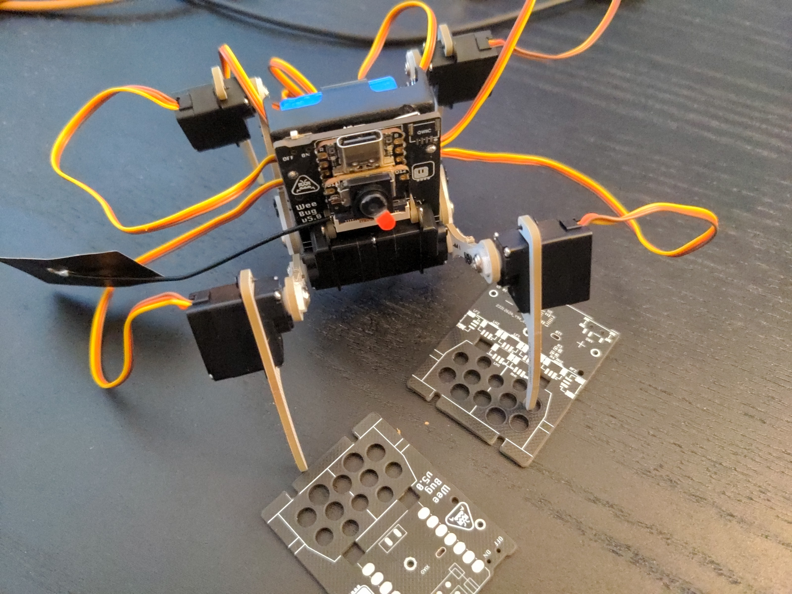

A String of Prototypes¶
Published on 2023-09-20 in Wee Bug.
The first Weebug was just a quick hack to see if it will work. It turned out to work even better than Fluffbug, so I made a second one, this time trying to make it look cool, and cleaning up the design. But if I want to do workshops with this eventually, I need to make it easily manufacturable and as easy to assemble as possible. So I made another prototype, with the same PCB art, but with an RP2040 chip instead of the unobtainium SAMD21.
That was also a test for the JLCPCB assembly services, a test of the new leg design, and a test of the 1mm servo plugs, that are physically much smaller than the 1.2mm ones, at least in the SMD version. The results are… mixed. The assembly service works as advertised and is very nice, but now I have five assembled boards I paid for that I have no use for – I will explain why shortly. I also had to pay the customs duty on the package, because with shipping it went over the threshold, so it got more expensive than I anticipated. I think that in the future I will prefer assembling the prototypes by hand myself, even if that means I have to make a separate order at LCSC for the parts.
What didn’t work so great are the servo sockets, and that’s mostly because of my own mistakes. First of all, I placed them too close to the servo mounting holes. There is enough clearance for the servos themselves, but not for the head of the screw that holds them in place. I had to break out my hot air gun and move the sockets slightly in on their footprints to make everything fit. Of course I can’t expect anyone else building the robot to do that, so I can’t give out or sell those boards. The second mistake is even more stupid. I swapped the signal and ground pins on the sockets. I was able to test the robot by carefully swapping those wires on the servos (the contacts in the plug are easy to remove and swap), but again, I can’t expect anyone else to do that.
And of course there is still the continuing problem of cable management, for which the only solution I found so far is to open each servo, desolder the wires, cut them to the right size from that side, and solder them back and reassemble each servo. The result is very clean and aesthetically pleasing, but it’s a bit too much fiddly work for a workshop, and I can’t do it for every servo in every kit.
So that’s a partial success. I definitely learned a lot, but there is some unnecessary waste in there…
I also decided that putting a bare chip on my boards doesn’t always make sense. It’s great when I need a lot of GPIOs, for example for a display or camera, but otherwise using a development board is both less work, and, in at least in case of the rp2040 and esp32 boards, cheaper – when I’m not assembling them myself, anyways.
In the mean time, I got my hands on the Seeedstudio Xiao ESP32-S3 Sense devboard, and I was greatly impressed. Not only is it blazing fast and has loads of memory and flash, but it even comes with a tiny little camera and microphone module, perfect for a robot like this. And it’s still in the Xiao form factor. So I made another prototype, this time specifically for this Xiao board:
It even includes battery recharging chip, though to use it you have to solder to some pads on the back of the board. That is what pushed me towards soldering the Xiao board directly to the PCB instead of using a socket. In hindsight, I think it was a mistake. For convenience, I made through-hole contacts on the back where those pads are, so they are easy to solder this way, but it would be much nicer to have the devboard removable. Oh, and I got the servo sockets right this time: the signals are correct, and I moved them out of the way of the screws. I had to move some electronic components under the battery holder, which made it later very annoying to debug my battery problems, but oh well.
But I didn’t avoid mistakes completely this time either. The DW07D chip I use for protecting the battery didn’t work correctly this time, even though it worked in all the previous prototypes, and several other projects. The only change I made is to connect the resistor that goes to the positive contact of the battery after the power switch, not before it as before – I was hoping it would make the discharge of battery left in the device slower when it’s switched off. But for some reason that made the chip panic and cut the battery off. Strange, but a quick bodge wire to move the resistor before the switch fixed it.
I’m also not the fan of the external antenna, which it a bit to large to attach anywhere on the robot.
So I got that one assembled and working, and I immediately started thinking about the improvements I want. I could use the bigger batteries, the same ones as in Fluffbug, for much longer battery life. That would also give me more space for the antenna. I want to make the microcontroller board pluggable, so I can program it independently, or have multiple ones with different programs and possibly different sensors. So I need a socket for it. And I think I would give up on the on-board battery charging chip of the Xiao, because the other Xiaos don’t have it, and because it wouldn’t let me recharge the battery with the power for the servos switched off. Battery charging chips are not expensive, I can just add my own in there. And finally, if I move all the components to the front, I won’t need to put them under the battery anymore, and there is plenty of space for the servo sockets. And I can stuff the loose servo cables under the microcontroller board, which is not perfect, but is some kind of a solution for the cable problem.
So I came up with this:
That includes all the ideas I had so far. I’m sure I will have more once this one arrives, but hopefully they won’t be important enough for another prototype. I think this is the final design, or at least very close to it.